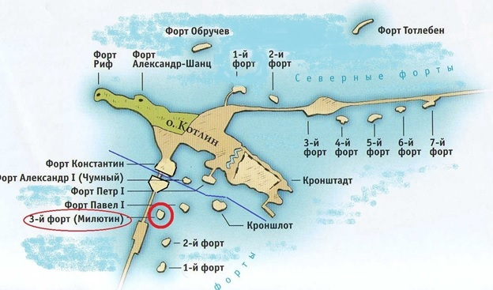
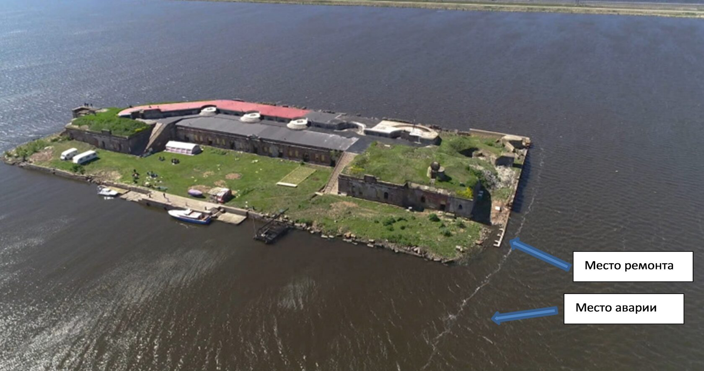

Наши происшествия
Случай №4. Яхта Катти. Неудачный выход с форта Милютин
Форт Милютин всегда привлекал яхтсменов Петербурга как цель плавания выходного дня.

Здесь можно встать к уцелевшей причальной стенке, сойти на берег и погулять по форту. Гавань хорошо защищена от западных ветров, плохо от восточных. С востока гавань форта окружена подводным полукруглым ряжем, глубина над которым около одного метра. Прохода в ряже в гавань два – южный и северный, входы не обставлены. Пройти можно только в светлое время суток по местным ориентирам.
Яхта Катти всегда пользовалась северным входом. Пройти в гавань с моря не представляло труда. Лодка заранее ложилась на створ (третья пушка справа по счету на причальной стенке створилась с углом здания с белой полосой). А вот выход с форта по этому же створу, только по корме был очень неудобен. Удержаться на остром (быстро расходящемся) створе было непросто, маленькое расстояние до ряжа не позволяло делать это плавно и постепенно. В общем, покидая форт, всегда немного нервничали.
И вот в тот раз, о котором мы рассказываем, судоводитель, проходя ряж, съехал со створа. По всей видимости, большая часть подводного борта прошла чисто, а вот перу руля не повезло. Свободно висящее перо загнулось от соприкосновения с ряжем, уперлось в корпус. Катти перестала управляться. Погода была хорошая, дул слабый ост. Якорь отдать не успели, и лодку сдрейфовало обратно в гавань форта. Несколько раз коснувшись фальшкилем подводных камней, яхта встала у стенки на достаточной глубине. Члены экипажа несколько раз нырнули для осмотра повреждений. Деформация пера руля была сравнительно невелика. Было принято решение опустить перо, насколько возможно, отдав стопорную гайку баллера.
Это позволило бы вернуть подвижность пера и, соответственно, управляемость. Операция прошла успешно. Оставалось выйти на свободную воду. Были сделаны промеры фарватера со шлюпки, расставлены буйки из пластиковых бутылок и другого подручного материала. Двигатель не использовали, передвигались, завозя верп на шлюпке, после чего подтягивались на якорном тросе.

Катти повезло с погодой. При усилении восточного ветра работы по ликвидации аварии были бы затруднительны или невозможны, а лодка могла бы получить повреждения корпуса при ударах о камни. Но решительность и трудолюбие экипажа было вознаграждено. В 4 часа утра следующих суток яхта ошвартовалась в Центральном яхтклубе.